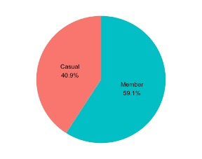
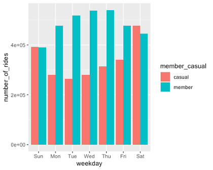
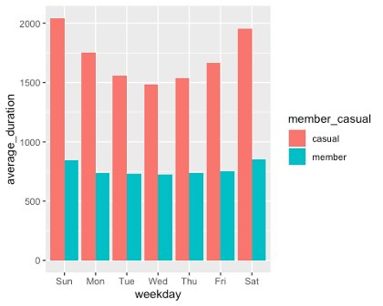
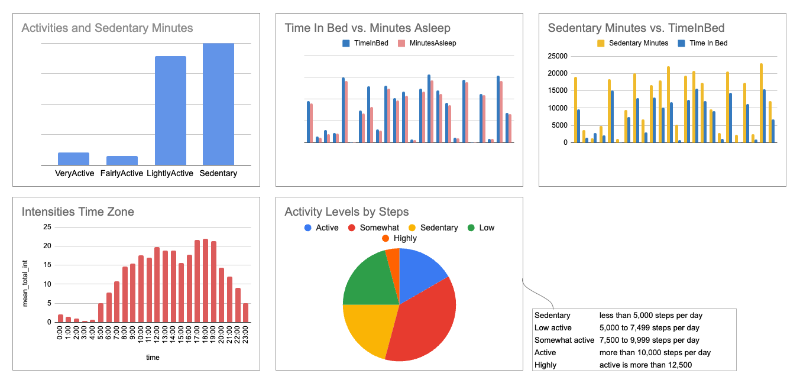
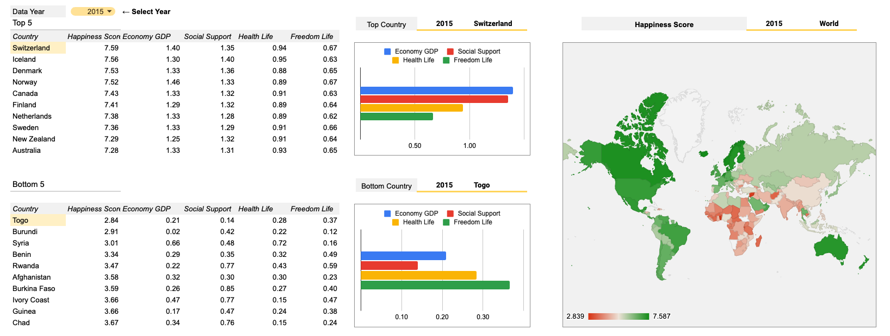

R (Programming Language)
Cyclistic bike-share Analysis
Case Study: How Does a Bike-Share Navigate Speedy Success?
Summary
The ratio of Casual and Member
- Casual 2346873
- Member 3386569
## ride_id started_at
## Length:5733442 Min. :2021-12-01 00:00:01.00
## Class :character 1st Qu.:2022-05-17 12:04:39.75
## Mode :character Median :2022-07-13 22:04:19.00
## Mean :2022-07-06 05:55:24.31
## 3rd Qu.:2022-09-07 17:55:32.75
## Max. :2022-11-30 23:56:11.00
## ended_at member_casual
## Min. :2021-12-01 00:02:40.00 Length:5733442
## 1st Qu.:2022-05-17 12:27:01.50 Class :character
## Median :2022-07-13 22:21:47.00 Mode :character
## Mean :2022-07-06 06:14:49.57
## 3rd Qu.:2022-09-07 18:11:31.00
## Max. :2022-12-01 11:45:53.00
## ride_length day_of_week
## Min. :1899-12-30 21:11:18.00 Min. :1.000
## 1st Qu.:1899-12-31 00:05:50.00 1st Qu.:2.000
## Median :1899-12-31 00:10:18.00 Median :4.000
## Mean :1899-12-31 00:19:26.26 Mean :4.106
## 3rd Qu.:1899-12-31 00:18:30.00 3rd Qu.:6.000
## Max. :1900-01-28 17:47:15.00 Max. :7.000
##
## casual member
## 2346873 3386569
Aggregate by day of week and mean of ride length with Member and Casual

## all_data$member_casual all_data$day_of_week all_data$ride_length
## 1 casual Sunday 2044.7868
## 2 member Sunday 842.7708
## 3 casual Monday 1753.9162
## 4 member Monday 736.4078
## 5 casual Tuesday 1558.3469
## 6 member Tuesday 728.8213
## 7 casual Wednesday 1482.0886
## 8 member Wednesday 723.9585
## 9 casual Thursday 1534.3701
## 10 member Thursday 737.9604
## 11 casual Friday 1667.2955
## 12 member Friday 749.9991
## 13 casual Saturday 1951.9685
## 14 member Saturday 849.0269
Google Sheets
Bellabeat Analysis
Case Study 2: How Can a Wellness Technology Company Play It Smart?
World Happiness Report Analysis
Overall happiness that contains interesting insights into the relationship between happiness, money, health, and many other metrics.
